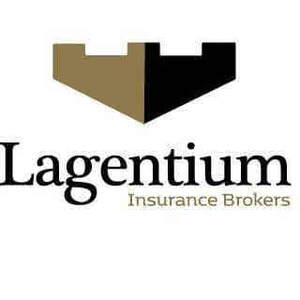

Trade Mark Journal No.2025/048 28 November 2025
UK00004297405 19 November 2025 (36)

- Class 36
- Insurance broking; Insurance; Health insurance; Insurance brokerage; Brokerage (Insurance -); Brokerage of insurance; Accident insurance; Provision of insurance services to insurance companies; Travel insurance; Brokerage of non-life insurance; Insurance services; Credit insurance; Insurance for businesses; Insurance agencies; Motor insurance; Brokerage of casualty insurance; Insurance consultancy; Aviation insurance; Insurance for garages; Life insurance brokerage; Insurance for vans; Marine insurance; Insurance underwriting and appraisals and assessment for insurance purposes; Insurance brokering; Insurance guarantees; Insurance brokers (Services of -); Marine accidents insurance underwriting; Insurance for offices; Vehicle insurance services; Insurance information; Insurance for hotels; Transport insurance brokerage; Insurance consultation; Motor insurance brokerage; Insurance advice; Insurance brokerage services; Insurance agency and brokerage; Arranging of insurance; Arranging insurance; Insurance (Arranging of -); Underwriting of business insurance (Services for the -); Travel insurance services; Transit insurance brokerage; Insurance brokerage for property; Insurance for legal expenses; Caravan insurance services; Insurance agency services; Insurance premium financing services; Credit risk insurance; Home insurance services; Household insurance services; Insurance management services; Administration of insurance business; Insurance risk management; Insurance advisory services; Arranging of travel insurance; Insurance arranging services; Insurance consultation services.
Lagentium Insurance Brokers Ltd